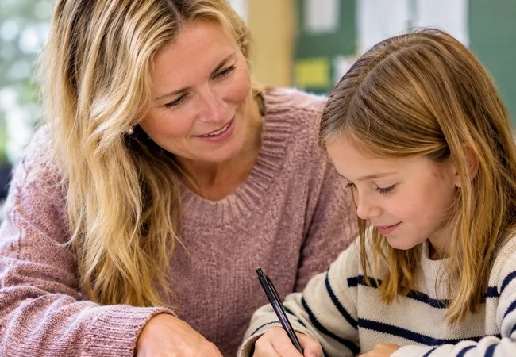

Når læsevanskeligheder påvirker deltagelse
Analysér mestring, selvforståelse og lige deltagelsesmuligheder. Interaktiv case og refleksionsark til studie og vejledning.
Åbn studieforløbetFra læsevanskeligheder og inkluderende undervisning til tekstanalytisk arbejde, studieopgaver og vejledning. Vælg en guide, der hjælper dig med det faglige spørgsmål, du arbejder med nu.

Alle guides indeholder forskningsblik, didaktiske valg, praksisforslag og refleksionsspørgsmål.
Analysér mestring, selvforståelse og lige deltagelsesmuligheder. Interaktiv case og refleksionsark til studie og vejledning.
Åbn studieforløbetFølg en fiktiv elevcase fra præcis observation til afgrænset indsats og kritisk opfølgning.
Åbn guidenPrøv en interaktiv analyseøvelse, og saml observation, teori, modforklaring og didaktisk forslag i et arbejdsudkast.
Åbn guidenPlanlæg et kort co-teaching-forløb med fælles mål, observation og efterfølgende faglig sparring.
Læs guideLær at skelne mellem spørgsmål, metode, resultater og fortolkning. En konkret guide til at bruge forskningslitteratur i din studieopgave.
Læs guidenEn konkret model til respons på problemformuleringer, analyser og studieopgaver.
Læs guideTræn nærlæsning, belæg, fortolkning og den didaktiske oversættelse til undervisningen.
Læs guideSkriv analytiske afsnit med tydelige påstande, belæg, faglig fortolkning og begrænsninger.
Læs guideAfgræns et praksisproblem, vælg relevant empiri og formulér et spørgsmål, du faktisk kan besvare.
Læs guideLæsning handler både om at genkende ord og forstå det, ordene fortæller. Når en elev kæmper, må vi undersøge, hvilken del af læseprocessen der er på spil.
Læs guideLæsevanskeligheder kan have flere årsager. Undersøg ordafkodning, sprogforståelse og samspillet mellem dem.
Læs guideTidlig opmærksomhed gør det lettere at sætte ind, før eleven oplever mange nederlag. Tegn skal vurderes i sammenhæng og over tid.
Læs guideEn test kan give viden om elevens behov. Sammen med observationer og elevens perspektiv giver den grundlag for en undervisningsplan.
Læs guideElever med ordblindhed kan forstå kompliceret indhold, samtidig med at afkodning og stavning tager meget energi.
Læs guideInkluderende undervisning begynder med planlægning, der giver forskellige elever adgang til samme faglige arbejde.
Læs guideLæsestrategier skal knyttes til konkrete tekster og formål. Strategierne får betydning, når de bliver afprøvet i en konkret læsesituation.
Læs guideLæse- og skriveteknologi giver elever adgang til fagligt indhold og flere muligheder for at udtrykke deres viden.
Læs guideOrdblindhed kan være en barriere i både litteraturlæsning, skriftlig fremstilling og arbejdet med grammatik. Vælg støtte efter opgavens krav og elevens behov.
Læs guideGod læsestøtte kræver en fælles forståelse af målet, men rollerne er forskellige.
Læs guideElever, der ofte møder nederlag ved læsning, kan begynde at undgå de situationer, der udstiller deres vanskeligheder.
Læs guideØv den faglige dømmekraft med tre realistiske, fiktive cases fra forskellige klassetrin.
Læs guideLæsevejlederen er både faglig ressourceperson, sparringspartner og mulig drivkraft i skolens udvikling af læseundervisningen.
Læs guideEn god værktøjskasse er lille nok til at blive brugt og fleksibel nok til at passe til den konkrete elev.
Læs guidePrøv en ægte analyseøvelse med fiktive oplysninger. Skeln mellem belæg og fortolkning, vurder en didaktisk beslutning og skriv selv videre. En faglig arbejdsform med plads til flere begrundede svar.
Guidene er praksisrettet inspiration til studie og undervisning. Testning, støtte, prøver og særlige vilkår følger skolens procedurer og aktuelle myndighedsvejledninger. Faglige kilder er knyttet til de enkelte guides.
Undersøg to fiktive elever med forskellige mønstre i ordlæsning og forståelse. Begrund næste undersøgelse med teori.